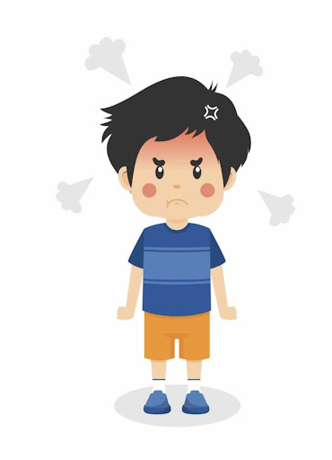

Cosas que me hacen enojar

-
Como persona soy muy responsables de mis actos y me molesta mucho las
personas irresponsables,las personas conformistas,las personas
envidiosas y de malos sentimientos que tratan de herir a los demás con
sus actos y palabras.
-
Existen diferentes cosas que me irritan bastante entre estos están el
abuso de confianza no soy muy tolerante a eso ni a los niños con
carencia de educación.
- No me gusta que me hablen mentira .
- No me gusta el sol.
-
No me gustan los gatos ,no le hago maldad trato de protegerlo y
respetarlo pero no tengo una relación muy estrecha con ese mamífero
aunque es una subespecie domesticado por su convivencia con nosotros
los seres humanos.